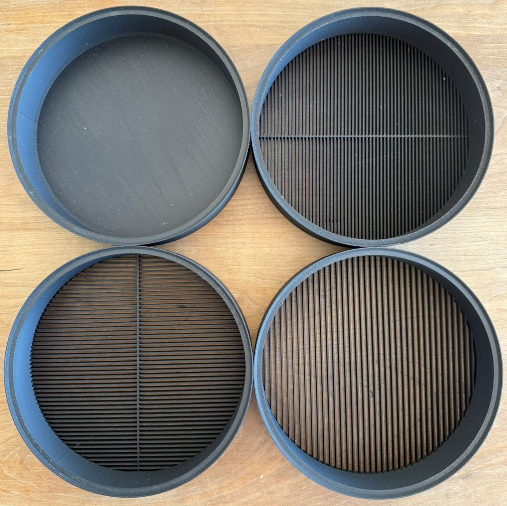
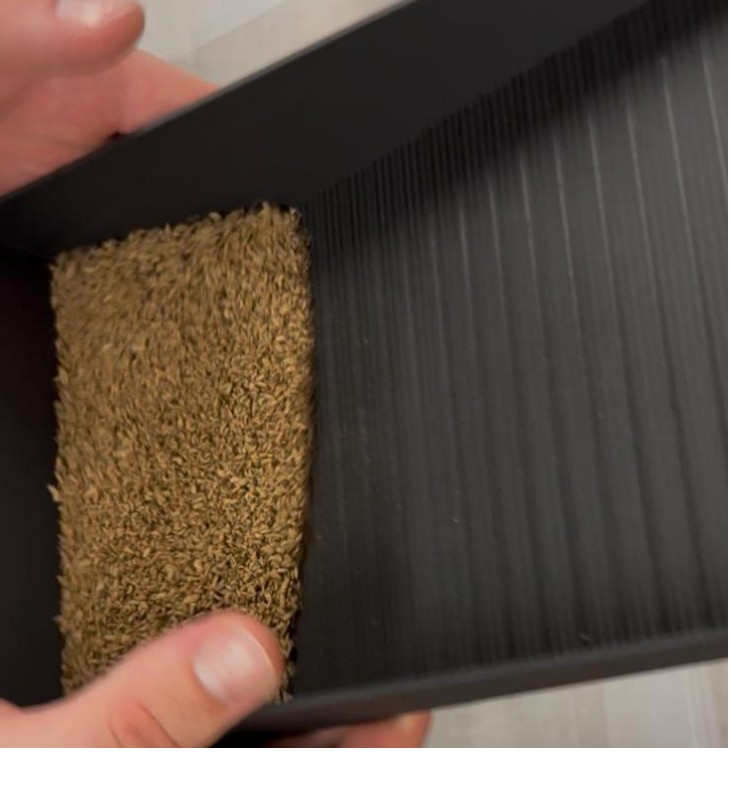
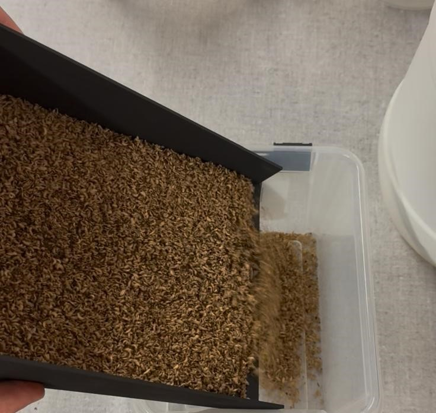
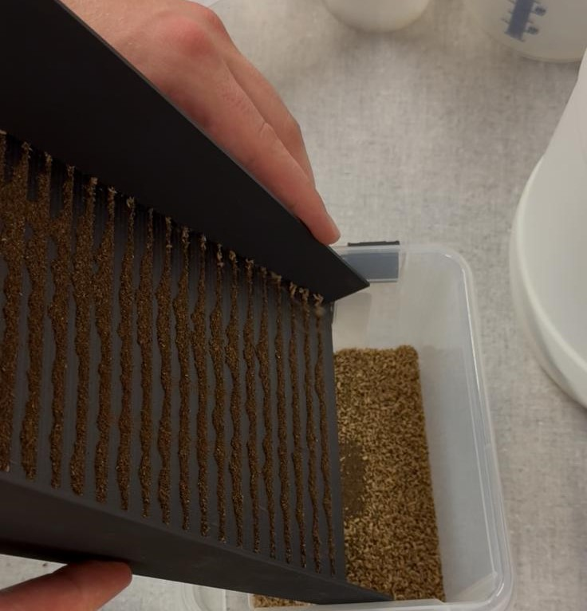
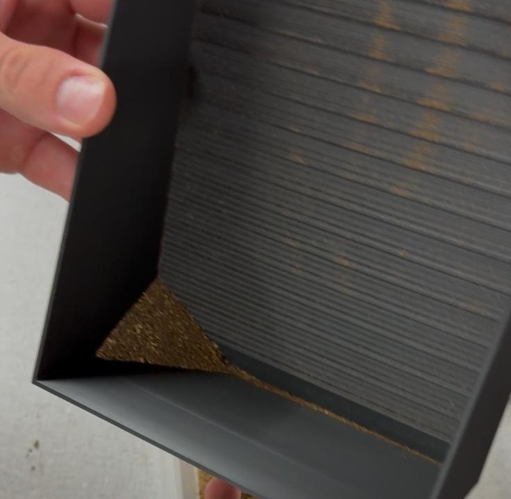
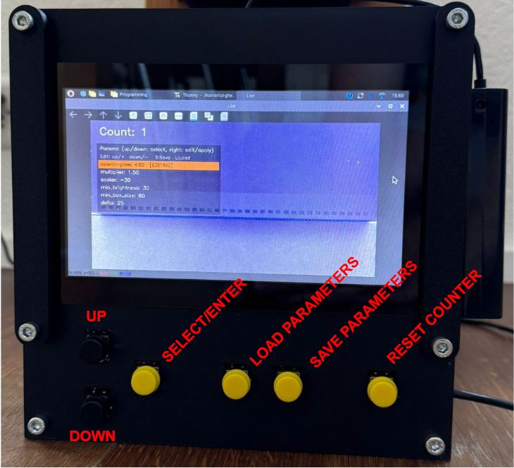

Usage Manual

1 Operation
Below, the the process of preparing and counting the 5-DOL with LCM MK1 is described. The entire batch of 5-DOL larvae should go through the sieving and the sedimentation step. This removes most of the chicken feed and frass from the larvae and removes larvae which are too small to be transferred and counted.
1.1 Sieving
1.1.1 Materials needed
- Sieves (3 mm, 2 mm, and 1.5 mm spacing)
- Collection bowl
- Two more containers (one for the larvae and one for the chicken feed)

1.1.2 Preparation
- Place the collection bowl on the table.
- Stack sieves on the bowl starting with the smallest gap on the bottom, progressing up to largest gap. Rotate each sieve 90° relative to sieve below. (Only use 1.5 mm sieve if larvae are small enough to pass through it, otherwise they will get stuck).
1.1.3 Procedure
- Pour 100 g of larvae mix into the top sieve.
- Remove the sieves one after another as soon as no more movement is spotted in the sieve (remove them carefully causing as little vibration as possible).
- Pour the separated chicken feed from the removed sieves into chicken feed collection container.
Repeat the process if there are still large chunks of chicken feed visible in the larvae mix (2–3 times bigger than the size of the larvae).
Important: Only process 100 g of larvae chicken feed mix per batch.
1.2 Sedimentation
The goal of the sedimentation step is to remove the frass from the previously sieved larvae. Additionally, by using the gold pan, larvae smaller than ~1 mm are also separated. To guarantee a high enough separation quality this step needs to be repeated multiple times.
1.2.1 Materials needed
- Gold Pan
- Container with sieved larvae (from the previous step)
- 2 more containers (1 for processed larvae, 1 for frass to be dumped in)
1.2.2 Procedure
- Hold the gold pan at an upward angle of around 45° and fill move the preprocessed larvae from the previous step into the gold pan (Processing 100 g of larvae and frass mix was successful; the maximum possible load must be found by trial and error), see Figure 2a.
- Tilt the gold pan forward until larvae start pouring out into the collection container. Increase the angle steadily until all large larvae have fallen out of the pan, see Figures 2b and 2c.
- Rotate the the gold pan back upwards to a steep angle and knock it on the back so the frass collects at the back side. Then knock from the side to move the frass into a corner. Pour the separated frass into the frass collection container (Smaller larvae may remain in the frass and should be added back into the chicken feed larvae boxes for transfer and counting on a later day).
Repeat this three-step process until the amount of frass removed in each cycle decreases drastically. After finishing, pour the completely preprocessed larvae into another large collection container.




1.3 Counting
As soon as all the larvae have been preprocessed, they can be fed into the counting step.

1.3.1 Procedure
- Take a sample from the freshly separated larvae.
- Set the counter of the machine to 0 (click RESET COUNTER).
- Pour the sample into the funnel of the counting machine.